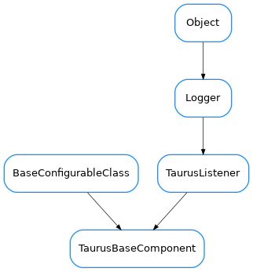

TaurusBaseComponent¶

-
class
TaurusBaseComponent(name, parent=None, designMode=False)[source]¶ Bases:
taurus.core.tauruslistener.TaurusListener,taurus.qt.qtcore.configuration.configuration.BaseConfigurableClassA generic Taurus component.
Note
Any class which inherits from TaurusBaseComponent is expected to also inherit from QObject (or from a QObject derived class).
Note
getSignaller()is now unused and deprecated. This is because taurusEvent is implemented usingbaseSignal(), that doesn’t require the class to inherit from QObject.-
FORMAT(dtype=None, basecomponent=None, **kwargs)¶ Default formatter callable. Returns a format string based on dtype and the mapping provided by :attribute:`TaurusBaseComponent.defaultFormatDict`
Parameters: - dtype (
object) – data type - basecomponent – widget whose display is to be formatted
- kwargs – other keyworld arguments
Return type: Returns: The format string corresponding to the given dtype.
- dtype (
-
applyPendingOperations(ops=None)[source]¶ Applies operations without caring about danger messages. Use
TaurusBaseWidget.safeApplyOperation()if you want to warn the user before applyingParameters: ops ( sequence<TaurusOperation> orNone) – list of operations to apply. If None is given (default) the component fetches the pending operations
-
contextMenuEvent(event)[source]¶ Handle the popup menu event
Parameters: event – the popup menu event
-
defaultFormatDict= {<type 'float'>: '{:.{bc.modelObj.precision}f}', <class 'taurus.external.pint.pint_local.quantity.Quantity'>: '{:~.{bc.modelObj.precision}f}', <enum 'Enum'>: '{0.name}'}¶
-
deleteLater()[source]¶ Reimplements the Qt.QObject deleteLater method to ensure that the this object stops listening its model.
-
displayValue(v)[source]¶ Returns a string representation of the given value
This method will use a format string which is determined dynamically from :attribute:`FORMAT`.
By default TaurusBaseComponent.FORMAT is set to :function:`defaultFormatter`, which makes use of :attribute:`defaultFormatDict`.
In order to customize the formatting behaviour, one can change :attribute:`defaultFormatDict` or :attribute:`FORMAT` directly at class level, or use :method:`setFormat` to alter the format string of an specific instance
FORMAT can be set to a python format string [1] or a callable that returns a python format string. If a callable is used, it will be called with the following keyword arguments: - dtype: the data type of the value to be formatted - basecomponent: the affected widget
The following are some examples for customizing the formatting:
Change FORMAT for all widgets (using a string):
TaurusBaseComponent.FORMAT = “{:.2e}”
Change FORMAT for all TaurusLabels (using a callable):
- def baseFormatter(dtype=None, basecomponent=None, **kwargs):
return “{:.1f}”
TaurusLabel.FORMAT = baseFormatter
Use the defaultFormatter but modify the format string for dtype=str:
TaurusBaseComponent.defaultFormatDict.update({“str”: “{!r}”})
[1] https://docs.python.org/2/library/string.html
Parameters: v ( object) – the value to be translated to stringReturn type: strReturns: a string representing the given value
-
eventReceived(evt_src, evt_type, evt_value)[source]¶ The basic implementation of the event handling chain is as follows:
- eventReceived just calls
fireEvent()which emits a “taurusEvent” PyQt signal that is connected (bypreAttach()) to thefilterEvent()method. - After filtering,
handleEvent()is invoked with the resulting filtered event
Note
in the earlier steps of the chain (i.e., in
eventReceived()/fireEvent()), the code is executed in a Python thread, while from eventFilter ahead, the code is executed in a Qt thread. When writing widgets, one should normally work on the Qt thread (i.e. reimplementinghandleEvent())Parameters: - eventReceived just calls
-
filterEvent(evt_src=-1, evt_type=-1, evt_value=-1)[source]¶ The event is processed by each and all filters in strict order unless one of them returns None (in which case the event is discarded)
Parameters:
-
findModelClass()[source]¶ Do a “best effort” to determine which model type corresponds to the given model name.
Return type: class TaurusModelorNoneReturns: The class object corresponding to the type of Taurus model this widget handles or None if no valid class is found.
-
fireBufferedEvents()[source]¶ Fire all events currently buffered (and flush the buffer)
- Note: this method is normally called from an event buffer timer thread
- but it can also be called any time the buffer needs to be flushed
-
fireEvent(evt_src=None, evt_type=None, evt_value=None)[source]¶ Emits a “taurusEvent” signal. It is unlikely that you need to reimplement this method in subclasses. Consider reimplementing
eventReceived()orhandleEvent()instead depending on whether you need to execute code in the python or Qt threads, respectivelyParameters:
-
getDangerMessage()[source]¶ Returns the current apply danger message or None if the apply operation is safe
Return type: strorNoneReturns: the apply danger message
-
getDisplayValue(cache=True, fragmentName=None)[source]¶ Returns a string representation of the model value associated with this component.
Parameters: Return type: Returns: a string representation of the model value.
-
getEventBufferPeriod()[source]¶ Returns the event buffer period
Return type: floatReturns: period (in s). 0 means event buffering is disabled.
-
getEventFilters(preqt=False)[source]¶ Returns the list of event filters for this widget
Parameters: preqt ( bool) – If true, return the pre-filters (that are applied in eventReceived, at the python thread), otherwise, return the filters to be applied at the main Qt thread (default)Return type: sequence<callable>Returns: the event filters
-
getForceDangerousOperations()[source]¶ Returns if apply dangerous operations is forced
Return type: boolReturns: wheter or not apply dangerous operations is forced
-
getFormatedToolTip(cache=True)[source]¶ Returns a string with contents to be displayed in a tooltip.
Parameters: cache ( bool) – if set to True (default) use the cache value. If set to False will force a connection to the server.Return type: strReturns: a tooltip
-
getFullModelName()[source]¶ Returns the full name of the current model object.
Return type: strReturns: the model name
-
getModel()[source]¶ Returns the model name for this component.
Return type: strReturns: the model name.
-
getModelClass()[source]¶ Return the class object for the widget. Default behavior is to do a ‘best effort’ to determine which model type corresponds to the current model name. Overwrite as necessary.
Return type: class TaurusModelorNoneReturns: The class object corresponding to the type of Taurus model this widget handles or None if no valid class is found.
-
getModelFragmentObj(fragmentName=None)[source]¶ Returns a fragment object of the model. A fragment of a model is a python attribute of the model object.
Fragment names including dots will be used to recursively get fragments of fragments.
For a simple fragmentName (no dots), this is roughly equivalent to getattr(self.getModelObj(), fragmentName)
If the model does not have that fragment,
AttributeErroris raised (other exceptions may be raised when accessing the fragment as well)Parameters: fragmentName ( strorNone) – the returned value will correspond to the given fragmentName. If None passed, self.modelFragmentName will be used, and if None is set, the defaultFragmentName of the model will be used instead.Return type: objReturns: the member of the modelObj referred by the fragment.
-
getModelObj()[source]¶ Returns the taurus model obj associated with this component or None if no taurus model is associated.
Return type: TaurusModelorNoneReturns: the taurus model object
-
getModelType()[source]¶ Returns the taurus model type associated with this component or taurus.core.taurusbasetypes.TaurusElementType.Unknown if no taurus model is associated.
Return type: TaurusElementTypeReturns: the taurus model type
-
getModelValueObj(cache=True)[source]¶ Returns the tango obj value associated with this component or None if no taurus model is associated.
Parameters: cache ( bool) – if set to True (default) use the cache value. If set to False will force a connection to the server.Return type: TaurusAttrValueReturns: the tango value object.
-
getNoneValue()[source]¶ Returns the current string representation when no valid model or model value exists.
Return type: strReturns: a string representation for an invalid value
-
getParentModelName()[source]¶ Returns the parent model name or an empty string if the component has no parent
Return type: strReturns: the parent model name
-
getParentModelObj()[source]¶ Returns the parent model object or None if the component has no parent or if the parent’s model is None
Return type: TaurusModelorNoneReturns: the parent taurus model object
-
getParentTaurusComponent()[source]¶ Returns a parent Taurus component or None if no parent
taurus.qt.qtgui.base.TaurusBaseComponentis found.Raise: RuntimeError
-
getPendingOperations()[source]¶ Returns the sequence of pending operations
Return type: sequence<TaurusOperation>Returns: a list of pending operations
-
getShowQuality()[source]¶ Returns if showing the quality as a background color
Return type: boolReturns: True if showing the quality or False otherwise
-
getShowText()[source]¶ Returns if showing the display value
Return type: boolReturns: True if showing the display value or False otherwise
-
getSignaller(*args, **kwargs)¶ Deprecated since version 4.0.
-
getTaurusFactory(scheme='')[source]¶ Returns the taurus factory singleton for the given scheme. This is just a helper method. It is the equivalent of doing:
import taurus factory = taurus.Factory(scheme)
Parameters: scheme ( strorNone) – the scheme. If scheme is an empty string, or is not passed, the scheme will be obtained from the model name. For backwards compatibility (but deprecated), passing None is equivalent to ‘tango’.Return type: TaurusFactoryReturns: the TaurusFactory
-
getTaurusManager()[source]¶ Returns the taurus manager singleton. This is just a helper method. It is the equivalent of doing:
import taurus manager = taurus.Manager()
Return type: TaurusManagerReturns: the TaurusManager
-
getTaurusPopupMenu()[source]¶ Returns an xml string representing the current taurus popup menu
Return type: strReturns: an xml string representing the current taurus popup menu
-
getUseParentModel()[source]¶ Returns whether this component is using the parent model
Return type: boolReturns: True if using parent model or False otherwise
-
handleEvent(evt_src, evt_type, evt_value)[source]¶ Event handling. Default implementation does nothing. Reimplement as necessary
Parameters:
-
hasPendingOperations()[source]¶ Returns if the component has pending operations
Return type: boolReturns: True if there are pending operations or False otherwise
-
insertEventFilter(filter, index=-1, preqt=False)[source]¶ insert a filter in a given position
Parameters: - filter (
callable(evt_src, evt_type, evt_value) – ) a filter - index (
int) – index to place the filter (default = -1 meaning place at the end) - preqt (
bool) – If true, set the pre-filters (that are applied in eventReceived, at the python thread), otherwise, set the filters to be applied at the main Qt thread (default)
See also: setEventFilters
- filter (
-
isAttached()[source]¶ Determines if this component is attached to the taurus model.
Return type: boolReturns: True if the component is attached or False otherwise.
-
isAutoProtectOperation()[source]¶ Tells if this widget’s operations are protected against exceptions
Return type: boolReturns: True if operations are protected against exceptions or False otherwise
-
isChangeable()[source]¶ Tells if this component value can be changed by the user. Default implementation will return True if and only if:
- this component is attached to a valid taurus model and
- the taurus model is writable and
- this component is not read-only
Return type: boolReturns: True if this component value can be changed by the user or False otherwise
-
isDangerous()[source]¶ Returns if the apply operation for this component is dangerous
Return type: boolReturns: wheter or not the apply operation for this component is dangerous
-
isModifiableByUser()[source]¶ whether the user can change the contents of the widget
Return type: boolReturns: True if the user is allowed to modify the look&feel
-
isPaused()[source]¶ Return the current pause state
Return type: boolReturns: wheater or not the widget is paused
-
isReadOnly()[source]¶ Determines if this component is read-only or not in the sense that the user can interact with it. Default implementation returns True.
Override when necessary.
Return type: boolReturns: whether or not this component is read-only
-
postAttach()[source]¶ Called inside self.attach() after actual attach is performed. Default implementation does not do anything.
Override when necessary.
-
postDetach()[source]¶ Called inside self.detach() after actual deattach is performed. Default implementation does not do anything.
Override when necessary.
-
preAttach()[source]¶ Called inside self.attach() before actual attach is performed. Default implementation just emits a signal.
Override when necessary.
-
preDetach()[source]¶ Called inside self.detach() before actual deattach is performed. Default implementation just disconnects a signal.
Override when necessary.
-
resetDangerMessage()[source]¶ Clears the danger message. After this method is executed the apply operation for this component will be considered safe.
-
resetFormat()[source]¶ Reset the internal format string. It forces a recalculation in the next call to :method:`displayValue`.
-
resetModifiableByUser()[source]¶ Equivalent to setModifiableByUser(self.__class__._modifiableByUser)
-
setAutoProtectOperation(protect)[source]¶ Sets/unsets this widget’s operations are protected against exceptions
Parameters: protect (bool) – wheater or not to protect widget operations
-
setDangerMessage(dangerMessage='')[source]¶ Sets the danger message when applying an operation. If dangerMessage is None, the apply operation is considered safe
Parameters: dangerMessage ( strorNone) – the danger message. If None is given (default) the apply operation is considered safe
-
setEventBufferPeriod(period)[source]¶ Set the period at wich
fireBufferedEvents()will be called. If period is 0, the event buffering is disabled (i.e., events are fired as soon as they are received)Parameters: period ( float) – period in seconds for the automatic event firing. period=0 will disable the event buffering.
-
setEventFilters(filters=None, preqt=False)[source]¶ sets the taurus event filters list. The filters are run in order, using each output to feed the next filter. A filter must be a function that accepts 3 arguments
(evt_src, evt_type, evt_value)If the event is to be ignored, the filter must return None. If the event is not to be ignored, filter must return a(evt_src, evt_type, evt_value)tuple which may (or not) differ from the input.For a library of common filters, see taurus/core/util/eventfilters.py
Parameters: - filters (
sequence) – a sequence of filters - preqt (
bool) – If true, set the pre-filters (that are applied in eventReceived, at the python thread), otherwise, set the filters to be applied at the main Qt thread (default)
Note: If you are setting a filter that applies a transformation on the parameters, you may want to generate a fake event to force the last value to be filtered as well. This can be done as in this example:
TaurusBaseComponent.fireEvent( TaurusBaseComponent.getModelObj(), taurus.core.taurusbasetypes.TaurusEventType.Periodic, TaurusBaseComponent.getModelObj().getValueObj())
See also: insertEventFilter
- filters (
-
setForceDangerousOperations(yesno)[source]¶ Forces/clears the dangerous operations
Parameters: yesno ( bool) – force or not the dangerous operations
-
setFormat(format)[source]¶ Method to set the FORMAT attribute for this instance. It also resets the internal format string, which will be recalculated in the next call to :method”displayValue
Parameters: format ( strorcallable) – A format string or a callable that returns it
-
setModel(model)[source]¶ Sets/unsets the model name for this component
Parameters: model ( str) – the new model name
-
setModelCheck(model, check=True)[source]¶ Sets the component taurus model. Setting the check argument to True (default) will check if the current model is equal to the given argument. If so then nothing is done. This should be the standard way to call this method since it will avoid recursion.
Parameters:
-
setModelInConfig(yesno)[source]¶ Sets whether the model-related properties should be stored for this widget when creating the config dict with
createConfig()(and restored when callingapplyConfig()). By default this is not enabled. The following properties are affected by this: - “model”Parameters: yesno ( bool) – If True, the model-related properties will be registered as config properties. If False, they will be unregistered.See also
registerConfigProperty(),createConfig(),applyConfig()
-
setModelName(modelName, parent=None)[source]¶ This method will detach from the previous taurus model (if any), it will set the new model to the given modelName and it will attach this component to the new taurus model.
Parameters: - modelName (
str) – the new taurus model name (according to the taurus convention) - parent (
TaurusBaseComponent) – the parent or None (default) if this component does not have a parent Taurus component
- modelName (
-
setModifiableByUser(modifiable)[source]¶ sets whether the user is allowed to modify the look&feel
Parameters: modifiable ( bool) –
-
setNoneValue(v)[source]¶ Sets the new string representation when no model or no model value exists.
Parameters: v ( str) – the string representation for an invalid value
-
setPaused(paused=True)[source]¶ Toggles the pause mode.
Parameters: paused ( bool) – whether or not to pause (default = True)
-
setShowQuality(showQuality)[source]¶ Sets/unsets the show quality property
Parameters: showQuality ( bool) – whether or not to show the quality
-
setShowText(showText)[source]¶ Sets/unsets showing the display value of the model
Parameters: showText ( bool) – whether or not to show the display value
-
setTaurusPopupMenu(menuData)[source]¶ Sets/unsets the taurus popup menu
Parameters: menuData ( str) – an xml representing the popup menu
-
setUseParentModel(yesno)[source]¶ Sets/unsets using the parent model
Parameters: yesno ( bool) – whether or not to use parent model
-
taurusEvent¶ Base signal taurusEvent
-